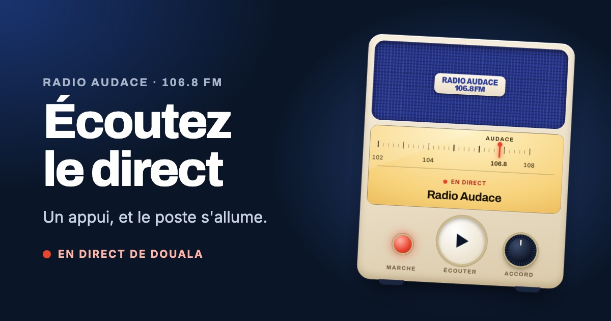

Note de maquette : la page « Écouter », version poste de radio
Tout ce qui est au-dessus est la page elle-même ; cette note n'en fait pas partie. Même adresse et mêmes boutons de partage que la version sobre : seule la présentation change. Deuxième passe, après une analyse critique.
Ce que voit la personne qui reçoit le lien
Dans WhatsApp, on voit la fiche avant la page. Elle montre donc le poste, allumé : le charme agit avant l'appui. Image proposée : assets/partage-ecouter.jpg.

Écouter Radio Audace 106.8 FM en directLe direct de Douala, où que vous soyez. Un appui et le poste s'allume.radioaudace.com
https://www.radioaudace.com/ecouter
Ce que l'on peut faire avec le poste
L'allumer : le bouton central lance le direct. La vitre du cadran chauffe pendant la connexion, puis s'éclaire ; le voyant « Marche » et l'aiguille passent au rouge, la toile du haut-parleur respire. Si le direct est indisponible, le voyant passe à l'ambre.
Jouer avec l'accord : le bouton de droite déplace l'aiguille. En s'éloignant de 106.8, la radio baisse et grésille ; dès qu'on lâche, l'aiguille revient seule sur Radio Audace. Sur iPhone, où une page ne peut pas baisser le son, l'aiguille bouge sans effet sonore : c'est un jeu, pas une commande.
Lire ce qui passe : émission, titre musical ou simplement « Radio Audace », dans la vitre, et la prochaine émission sous le poste. À essayer : émission, musique, aucune information.
Ce qui a changé depuis la première passe
Plus de bouton de volume : malcommode au doigt, inopérant sur iPhone, et les touches du téléphone font déjà ce travail. Un voyant « Marche » le remplace sur la façade.
Le rouge ne s'allume qu'avec le son : poste éteint, pastilles, aiguille, voyant et anneau du bouton sont neutres. Sans information de RadioManager, la vitre dit « À l'antenne », plus « En direct ».
Téléphone couché : cadran et commandes côte à côte, le bouton d'écoute reste à l'écran.
Petits écrans : la toile du haut-parleur prend la hauteur qui reste ; c'est elle qui cède quand un titre passe sur deux lignes, pas le partage qui sort de l'écran.
L'aiguille se lit 106.8 : un trait tous les 0,2 MHz, le chiffre 106.8 sous l'aiguille, une aiguille plus haute que les traits.
Prochaine émission rétablie sous le poste ; un titre long passe sur deux lignes.
Cadran recentré : il montre la fin de la bande FM (102 à 108), la station n'est plus collée au bord.
Accessibilité : titre de page, et l'accord n'est plus annoncé aux lecteurs d'écran.
À décider
Quelle version pour le lien : le poste (recommandé pour un lien que l'on partage) ou la version sobre.
La couleur du poste : ivoire et toile bleue (ici), ou une autre teinte.
À essayer sur de vrais téléphones avant d'écrire le thème : le grésillement de l'accord sur Android, et son absence sur iPhone.